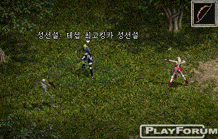
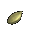
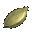
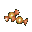
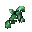
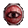
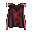

|
2002年10月18日
韓國測試伺服器10月17日更新內容
原文：Lineage Playforum
英文翻譯：Lineage Compendium
1. 祝瞬和妖精50級的指定傳送能力現在會有一個畫面的偏差，而傳送控制戒指配合瞬卷則可以準確傳送。
2. 在戰鬥區域中使用邪惡魔法不會再有懲罰。
3. 格鬥場的難度輕微上昇。
4. 古代金屬盔甲的防禦力由-15改為-16。
5. 修正了沙哈之弓的魔法箭圖像錯誤，現在沒有難看的黑邊了。

韓國天堂被制定為18禁遊戲
原文：news.naver.com
英文翻譯：Lineage Compendium
韓國類似ESRB的機構將天堂制定為18禁的遊戲，即是說韓國的網伽不可以讓未滿18歲人仕玩天堂遊戲，由於韓國有為數很多的玩家經常在網伽玩天堂，因此NC對此非常失望。
NC說他們希望天堂可以被制定為12+的遊戲，因此他們已經將遊戲內容改得比較適合少年玩，例如加入Lineage Tournament去減少現實暴力，圖像改變等等。但被制定為18禁的原因還有容易上癮、暴力及賭博。
大約30%的韓國玩家都是14歲或以下，佔了很大的比數。此文沒有提及其他國家或地區會否有相同改變，或是NC會否有其他計劃去應付。
韓國測試伺服器10月17日檔案內容
昨天韓國測試伺服器更新了七十餘個檔案，經本網初步研究新發現如下：
以下為新增的圖示及比較肯定的相應名稱：
|
Potion of Revival |
重生藥水 |
|
Jack-0'Lantern |
南瓜燈 |
|
Ramia's Scale |
蛇女之鱗 |
 |
Pumpkin Seed |
南瓜種子 |
|
Raw Spirit Stone |
精靈原石 |
 |
Big Pumpkin Seed |
大南瓜種子 |
|
Undead Key |
不死系鑰匙 |
|
Pumpkin Lantern |
南瓜燈籠 |
|
Skeleton Key |
骷髏鑰匙 |
 |
Candy For Jack |
萬聖節糖果 |
 |
Bone of Undead |
不死系之骨 |
|
Copper Pumpkin |
銅南瓜 |
|  |
Bone Piece of Undead |
不死系骨碎 |
|
Sliver Pumpkin |
銀南瓜 |
|  |
Shield of Red Knight |
紅騎士之盾 |
|
Gold Pumpkin |
金南瓜 |
| |
|
|
|
Pumpkin Head |
南瓜頭 |
以下為新增的圖示及不太肯定的相應名稱：
|  |
Cloak of Red Knight |
紅騎士斗篷 |
 |
Clothes of Red Knight |
紅騎士之衣 |
 |
Crystal Ball |
水晶球 |
 |
Wind Rod |
風之杖 |
 |
Steel Staff of Mana |
鋼鐵瑪那魔杖 |
|
Relics of Village Inhabitants |
原居民的遺物 |
|
Cursed Spirit Scroll |
詛咒的精神卷軸 |
看到了南瓜與糖果後，很明顯地他們大部分都是和萬聖節（萬聖夜，Halloween）有關！相信在10月31日當天晚上各地的天堂伺服器都會舉行萬聖節活動，另外其他道具看起來亦像與新任務有關的道具。
而在NPC控制檔中則加入了變種巨蟻女皇(mutant queen ant)與變種巨大兵蟻(mutant soldier ant)。
另外在最新的物品名稱檔案亦加入了以下名稱，請自行參詳：
Elven Helm of Dexterity
Elven Helm of Constitution
Old Trading Document
Letter from Aanon
Letter from Oth
Search Document
Letter from Zero
Letter from Jem
Black Knight's Pledge Document
Duda-Mara Spellbook
Neruga Spellbook
Gandi Spellbook
Atuba Spellbook
Cursed Spellbook
Book of Magical Powers
Red Cloak
Skeleton Skull
Ghoul Nail
Ghoul Tooth
Turtle Dragon Shell
Knight's Hood
Red Knight's Hood
Ricky
Oth
Zero
Jem
Black Knight Search Party
Forgotten Island Boat Ticket
Isvall
Ishiris
Forgotten Plate Mail
Forgotten Leather Armor
Forgotten Robe
Forgotten Scale Mail
Ring of Summon Control
Forgotten Great Sword
Forgotten Sword
Forgotten Bowgun
Old Helm of Wind
Helm of Wind
Rabbit Liver
Oblivion
Heine Boat Ticket
Ancient Plate Mail
Ancient Leather Armor
Ancient Robe
Ancient Scale Mail
Ancient Sword
Ancient Great Sword
Ancient Scroll
Detector
Chicky
Lucky
Tilon
Ancient Bowgun
Sealed
Spellbook (True Target)
Spellbook (Glowing Aura)
Secret of Life
Agricolaw |
Davia
Wind Rod
Xperin
(Ice Dagger)
(Wind Shuriken)
(Fire Arrow)
(Stalac)
(Frozen Cloud)
(Earth Jail)
(Cone of Cold)
(Sunburst)
(Earthquake)
(Fire Storm)
(Greater Haste)
(Holy Weapon)
(Decrease Weight)
(Reveal Weakness)
(Counter Magic)
(Meditation)
(Mana Drain)
(Darkness)
(Weakness)
(Bless Weapon)
(Magical Mine)
(Disease)
(Life Stream)
(Silence)
(Decay Potion)
(Inner Sight)
(Absolute Barrier)
(Change Position)
(Enhanced Mass Teleport)
(True Target)
(Glowing Aura)
Sword of Illusion
Armor of Illusion
Bow of Illusion
Scroll of Enchant Weapon Illusion
Scroll of Enchant Armor Illusion
Illusina
Steel Staff of Mana
Spirit of Fire
Spirit of Water
Spirit of Wind
Spirit of Earth
Summoned Spirit of Fire
Summoned Spirit of Water
Summoned Spirit of Wind
Summoned Spirit of Earth
Mark
Cargo
Search Ant
Gatekeeper Ant
Aria
Tarzan
Fairy Princess
Dilong
Betrayer of Undead
Marcia
Secret Room Key |
Arachnevil Elder's Claw
Ramia's Scale
Potion of Revival
Letter of Thanks
Relics of Village Inhabitants
Raw Spirit Stone
Cursed Spirit Scroll
Undead Key
Zombie Key
Skeleton Key
Bone of Undead
Bone Piece of Undead
Shield of Red Knight
Jane
Alex
Cronos
Dark Mage
Samuel
Phineas
Heather
Heidi
Alan
Toby
Sheldon
Randalf
Serpent of Elindare
Elindare
Minion of Elindare
Melinda
Tarnac
Randalf
Esmerelda
Uriah
Josef
Rachel
Ruth
Kohath
Korah
Rueben
Makir
Jack-O'Lantern
Jack-0'Lantern
Pumpkin Seed
Big Pumpkin Seed
Pumpkin Lantern
Candy For Jack
Gold Pumpkin
Sliver Pumpkin
Copper Pumpkin
Pumpkin Head
變種巨蟻女皇
變種巨大兵蟻 |
|